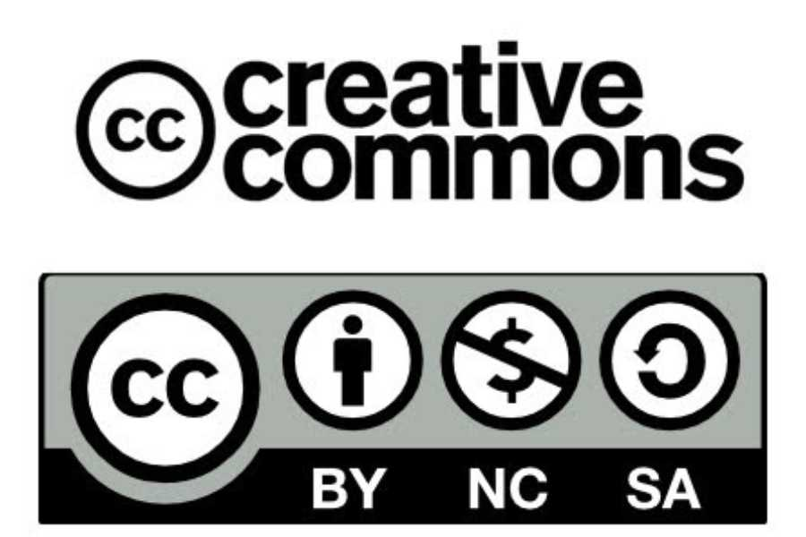

Información final
Autoría: Sara Varela Prados
Descripción: todos los documentos y contenidos vistos en este proyecto están encaminados a que el alumnado realice de forma satisfactoria el proyecto final y la interpretación del canon de Pachelbel.
Licencia de uso: CC-BY-NC-SA

Descargar el archivo fuente
| Título | Viajamos al Barroco musical |
|---|---|
| Descripción | En esta SdA, el alumnado tendrá que buscar información sobre algunas características de la música en el Barroco, tendrá que hacer dos proyectos en grupo, y tendrá que interpretar con la flauta una obra de esta época. |
| Autoría | |
| Licencia | Creative Commons BY-NC-SA 4.0 |
Este contenido fue creado con eXeLearning, el editor libre y de fuente abierta diseñado para crear recursos educativos.